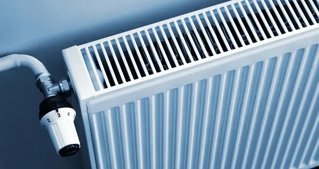

Şişli, İstanbul Avrupa Yakası
Şişli Petek Temizleme
Şişli ve çevresinde petek temizleme işleri için 7/24 ulaşabileceğiniz bir ekibiz. Isınmayan, altı soğuk kalan peteklerdeki çamur ve tortuyu makineyle temizliyoruz.

- 7/24 hizmetGece, hafta sonu ve bayramda da arayabilirsiniz.
- Ortalama 30 dakikaEkiplerimiz Avrupa yakasında adrese ortalama 30 dakikada ulaşıyor.
- 25 ilçeAvrupa yakasının tüm ilçelerine servis veriyoruz.
- Fiyat işten önceUsta yerinde baktıktan sonra, işe başlamadan fiyatı söylüyor.
Şişli'de petek temizleme işlerinde neye dikkat ediyoruz?
Şişli'de plaza ve iş merkezleri ile Kurtuluş–Nişantaşı tarafındaki eski apartmanlar bir arada.
Eski apartmanların bir bölümü hâlâ merkezi sistemle ısınıyor; bireysel kombiye geçen dairelerde eski petekler korunmuş.
Şişli'de petek temizliğine gitmeden önce sistemin kombili mi merkezi mi olduğunu, kaç petek bulunduğunu telefonda soruyoruz; böylece doğru ekipmanla geliyoruz.
Plazalarda teknik müdürlükten çalışma iznini alarak, apartmanlarda yöneticiyle konuşarak giriyoruz.
Hangi durumlarda petek temizleme için aramalısınız?
- Bazı odalar ısınırken bazıları soğuk kalıyor
- Peteğin havasını alınca siyah, çamurlu su geliyor
- Doğalgaz faturası geçen yıla göre belirgin şekilde arttı
- Kombi sürekli çalışmasına rağmen ev geç ısınıyor
Şişli'de petek temizliği kapsamı
Petek sökme ve takma
Boya, tadilat ya da yer değişikliği için peteğin sökülüp yeniden bağlanması.
Kaçak ve damlama
Petek rakoru ve vanasındaki damlamaların giderilmesi.
Hava alma ve dengeleme
Temizlik sonrası peteklerin havasının alınması ve odalar arası ısı dengesinin ayarlanması.
Termostatik vana
Petek vanası ve termostatik vana montajı ya da değişimi.
Usta gelene kadar ne yapabilirsiniz?
- Isıtma sezonu başlamadan, sonbaharda yaptırmak hem kuyruğu hem de soğukta kalma riskini azaltır.
- Petek temizliği öncesinde petek önlerindeki eşyaları biraz uzaklaştırın.
Şişli'nin binalarında tesisatın genel durumu
Eski apartmanların döküm gider hatları içten daralmış; plazalarda ise mutfak ve WC hatlarının yoğun kullanımı tıkanıklık yapıyor.
Kurtuluş ve Nişantaşı'ndaki eski apartmanlarda tesisat yüzyılın ortasından kalma olabiliyor; kolon değişimi ertelenmiş binalar çok.
Hizmet verdiğimiz Şişli mahallelerinden bazıları: Nişantaşı, Mecidiyeköy, Kurtuluş, Fulya, Bomonti ve Esentepe. Adres tarifini telefonda netleştirip ekibi en kısa güzergâhtan gönderiyoruz.
Sık sorulan sorular
Şişli'de petek temizleme ne kadar sürer?
Daire büyüklüğüne ve petek sayısına göre değişmekle birlikte genellikle birkaç saat sürüyor. Temizlik bittiğinde petekleri çalıştırıp ısınmayı birlikte kontrol ediyoruz.
Petek temizliği ne sıklıkla yapılmalı?
Sistemin yaşına ve suyun durumuna göre değişir. Peteğin altı soğuk kalıyorsa ya da hava alırken çamurlu su geliyorsa zamanı gelmiş demektir.
Petek temizliği için petekleri sökmek gerekiyor mu?
Hayır. Makineli temizlikte petekler yerinde kalır; tesisat makineye bağlanıp temizlenir.
Petek temizliği doğalgaz faturasını düşürür mü?
Çamurla tıkanan petek ısıyı odaya veremediği için kombi daha uzun çalışır. Temizlik ısınma verimini artırır; faturadaki etki evin yalıtımına ve kullanıma göre değişir.
Şişli'de diğer hizmetlerimiz
Yakın ilçelerde petek temizleme
- Beşiktaş Petek Temizleme
- Beyoğlu Petek Temizleme
- Kağıthane Petek Temizleme
- Sarıyer Petek Temizleme
- Eyüpsultan Petek Temizleme
Diğer bölgeler: Esenler · Arnavutköy · Esenyurt · tüm ilçeler
Şişli için usta mı lazım?
7/24 arayabilir ya da WhatsApp'tan yazabilirsiniz.